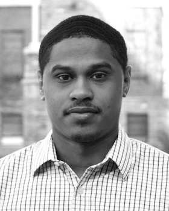

我们的团队

|
Kathy Perkins
Director
|

|
Carl Wieman
Founder, Senior Advisor
Carl founded the PhET Interactive Simulations project in 2002 – then known as the “Physics Education Technology” project. Today, he is a senior advisor to PhET and is a Professor at Stanford University, where he actively researches PhET simulations as tools in STEM learning ...
MORE
|
Team Members

Issam Ali
Visiting Scholar
Development · physics
Isam is visiting the PhET group for a year and will be working on simulatio...
MORE

Denzell Barnett
Software Developer
Development · Sim Design
Denzell joined PhET in early 2017 after a summer internship. Soon after gra...
MORE

John Blanco
Software Developer
Development · Sim Design
John has been developing simulations for PhET since 2008 and has created si...
MORE

Jeffrey Bush
Graduate student
math · research · curriculum · teacher pd
Jeff works as a graduate research assistant on the PhET project, investigat...
MORE

Kathy Li Dessau
Associate Director
Fundraising · Marketing · Communications
Kathy helps PhET with corporate relations, licensing, fundraising, and comm...
MORE

Wanda Diaz Merced
Postdoctoral Researcher
Physics · Accessibility · College
Born and Raised in Gurabo Puerto Rico. A fan of human beings. Mutidiscipl...
MORE

Michael Dubson
Physics Faculty
Sim Design · Development · Physics · College
Mike is an experienced physics teacher and an expert in undergraduate curri...
MORE

Brett Fiedler
Post-Doctoral Researcher
Research · Partnerships · Accessibility · K-12
Brett is integrating PhET simulations with enhanced sound into an informal ...
MORE

Jesse Greenberg
Software Developer
Development · Sim Design · Accessibility
Jesse works on porting PhET simulations to HTML5 and assists in the develop...
MORE

Nicole Johnson
Tactile Graphic Specialist
accessibility · research · development · design
Nicole is joining the PhET team to work on accessibility development and re...
MORE

Michael Kauzmann
Software Developer
Development · Website · Science

Chris Klusendorf
software developer
development · sim design · website

Diana López
Latin America Specialist
Physics · Teacher PD · Sim Design
Diana has been collaborating with PhET since 2017 working on the design of ...
MORE

Amanda McGarry
Math Specialist
Math · Sim Design · Teacher PD · Curriculum · Website

Emily B. Moore
Director of Research and Accessibility
PI · Research · Accessibility · Teacher PD · Chemistry
Emily leads research into the design and use of PhET simulations, and the d...
MORE
.jpg)
Ashton Morris
Sound Designer
Audio · Accessibility · Sim Design

Oliver Nix
Business Manager
Finances · Admin · Website · Communications
Oliver handles day to day operations for the project and interacts with use...
MORE

Jonathan Olson
Software Developer
Development · Sim Design · Website
Jonathan works on libraries like Scenery that are used for development, in ...
MORE

Robert Parson
Chemistry Faculty
Curriculum · Research · Sim Design · Chemistry
Robert joined the PhET project in 2008 after serving as the chemistry direc...
MORE

Ariel Paul
Director of Development
Physics · Sim Design · Management

Matt Pennington
Software Developer
Development · Website · Mobile

Argenta Price
Post-Doctoral Researcher
Research · K-16 · Biology
Argenta is a postdoctoral researcher with Carl Wieman. She researches how s...
MORE

Sam Reid
Software Developer
Development · Sim Design

Amy Rouinfar
Science Specialist
Physics · Sim Design · Teacher PD · IRB

Taliesin Smith
Accessibility Specialist
Accessibility · Research · Sim Design
Taliesin Smith joined PhET to continue research on making PhET simulations ...
MORE

Taylor Want
software developer
accessibility · development · physics
Taylor joined the PhET team in 2019. She works as a developer on the access...
MORE

David Webb
Math Education Faculty
Math · Research · Curriculum · Teacher PD
David has been supporting the PhET project since 2014, and is a co-PI on th...
MORE

R. Michael Winters
Sonification Design Researcher
Research · Accessibility · Sim Design · Tech
Kathryn Woessner
QA Team Lead
QA · Physics
Katie joined the PhET team in the summer of 2018. She works on Quality Assu...
MORE

Student Assistants

Jaspe Hernandez
QA · translation

Megan Lai
QA · Graphic Design

Danish Mohammed
Development · Website

Liam Mulhall
QA

Jacob Romero
QA

Saurabh Totey
development
Consultants/Contractors
Susan Badger
Consultant ·
Badger Consulting Group, LLC
Chris Malley
Software Development ·
Pixelzoom, Inc.
Cheryl McCutchan
Graphic Design ·
www.animediascience.com
Sam McKagan
Education Consultant ·
McKagan Enterprises, Inc.
Shawna Schultz
Multimedia ·
Mass FX Media
Collaborators
Accessibility
Carrie Bruce
Senior Research Scientist ·
School of Interactive Computing - Georgia Institute of Technology
Clayton Lewis
Professor, Computer Science ·
University of Colorado Boulder
Jutta Treviranus
Professor / Director ·
Inclusive Design Research Centre, OCAD University
Bruce Walker
Professor/ Director Sonification Lab ·
School of Psychology and the School of Interactive Computing - Georgia Institute of Technology
Assessment & Interoperability
Cognitive and Learning Sciences Center
Assessment ·
Educational Testing Services, Inc.
Ido Roll
Senior Manager: Research and Evaluation ·
University of British Columbia
Dan Schwartz
Professor, Learning Sciences ·
Stanford University
Doug Stein
Chief Technology Officer ·
Metacog, Inc.
Math Education
Karina K. Hensberry
Assistant Professor, Math Education ·
University of South Florida St. Petersburg
Corinne Singleton
Evaluator ·
SRI International, Inc.
Ian Whitacre
Assistant Professor, Math Education ·
Florida State University
Physics Education
Noah Finkelstein
Professor, Physics Education Research ·
University of Colorado Boulder
University of Colorado Boulder Offices
Employee Services
Payroll, benefits, and human resource management
OIT Center of Excellence
Salesforce implementation
OIT Shared Infrastructure Services
Server management
Office of Advancement
Fundraising and donation management
Office of Contracts and Grants
Grant and contract preparation and administration
Research Administration and Support
Institutional review board for oversight of human research
Sponsored Projects Accounting
Financial administration of sponsored research
Strategic Relations
Salesforce-based electronic communication
Technology Transfer Office
Licensing agreements and partnerships
University Counsel
Legal review; Trademark administration